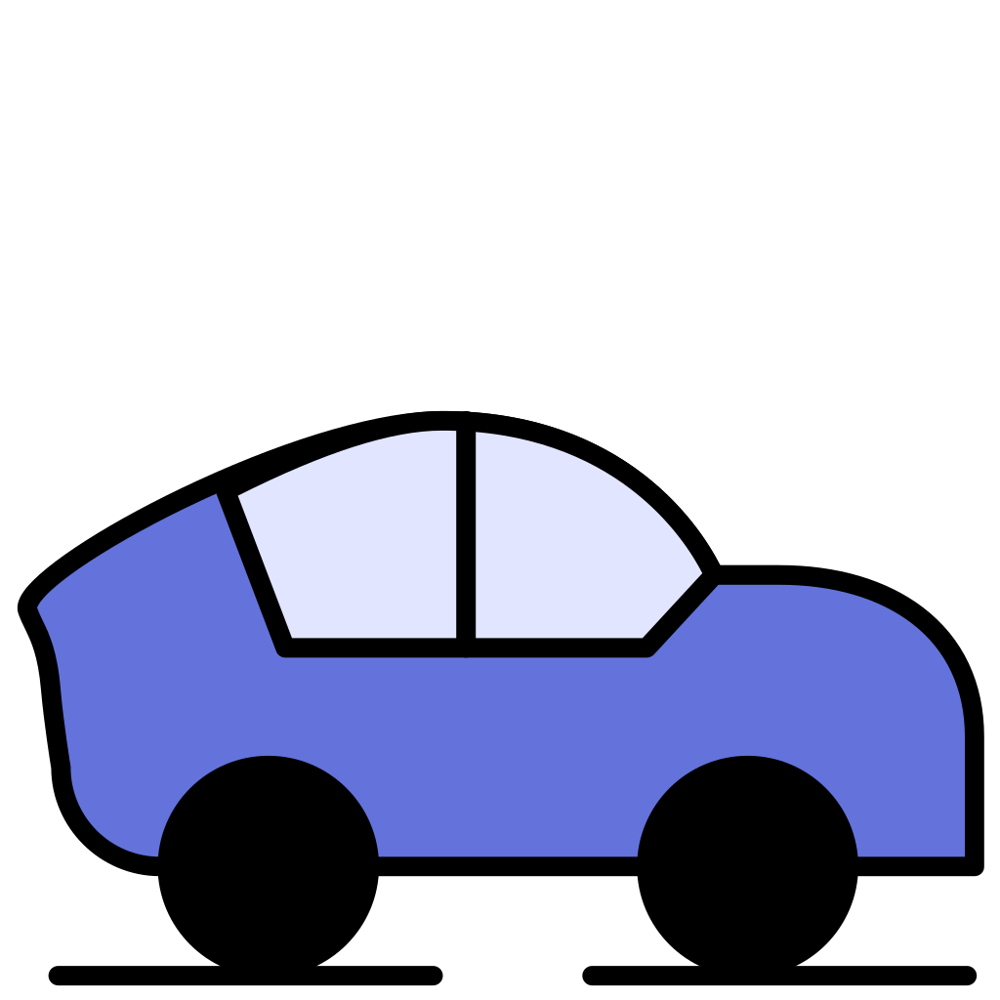

Speed and Time
A car travelling at
60 kmph
covers a journey in
2.5 hours
. By how much must it increase its speed to cover the same journey in
1.5 hours
?
Q
60 km/hr

Time:
2.5 hr
? km/hr
Time:
1.5 hr
Car at
60 kmph
:
2.5 hr
→
1.5 hr
. Find the speed increase.
Given
60 km/hr,
2.5 hr
Required
? km/hr,
1.5 hr
Given
Speed =
60 km/hr
Original Time =
2.5 hr
New Time =
1.5 hr
Step 1
Distance
=
Original
Speed
×
Original
Time
=
60
×
2.5
=
150 km
Same journey ⇒ distance unchanged
New
Distance
=
150 km
Step 2
New
Speed
=
New
Distance
÷
New
Time
=
150
÷
1.5
=
100 km/hr
Step 3
Not the new speed — find the increase!
Increase
=
New
Speed
−
Original
Speed
=
100
−
60
=
40 km/hr
G
Speed =
60 km/hr
Original Time =
2.5 hr
New Time =
1.5 hr
1
Distance = 60 × 2.5
=
150 km
(unchanged)
2
New Speed = 150 ÷ 1.5
=
100 km/hr
3
Increase = 100 − 60
=
40 km/hr
A
50 kmph
B
100 kmph
C
30 kmph
D
40 kmph